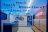
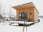

Voting in Grand Prix of Architects
Voter: Mgr. Testovací Hodnotitel
You have 136 projects requiring your vote.
Vote nowAll projects overview
| Preview | Project name | Authors / Studio | Your vote | ||
|---|---|---|---|---|---|
| 1. | Lávka přes Vltavu v Lužci nad Vltavou | Petr Tej, Marek Blank, Jan Mourek | View project | ||
| 2. |
|
Jesle Malvína | No Architects s.r.o. / Jakub Filip Novák, Daniela Nováková Baráčková, Barbora Jelínek, Kristýna Plischková | View project | |
| 3. |

|
Bytový dům Šumavská | Atelier RAW , doc.ing.arch. Tomáš Rusín, doc.ing.arch.Ivan Wahla.ing.arch. Lukáš Vágner | View project | |
| 4. | Telegraph | ječmen studio - Lukáš Blažek, Eva Blažková, Vojtěch Jemelka, Lucie Vyhlídalová | View project | ||
| 5. |

|
DADA Distrikt | KOGAA | View project | |
| 6. | rekonstrukce paláce hradu Helfštýna | Miroslav Pospíšil / atelier-r, s.r.o. | No vote yet | View project | |
| 7. | Výstava Nebourat! | Ondřej Císler, Klára Kvízová | Zatím nehlasováno | Zobrazit projekt | |
| 8. | Rekonstrukce historické a provozní budovy Státní opery | Masák & Partner, s.r.o. | Zatím nehlasováno | Zobrazit projekt | |
| 9. | Věčná loviště | Petr Hájek, Martin Stoss, Cornelia Klien / Petr Hájek ARCHITEKTI, s.r.o. | Zatím nehlasováno | Zobrazit projekt | |
| 10. | Vila CH | TREF-A, Ing. arch. Zdeněk Trefil | Zatím nehlasováno | Zobrazit projekt | |
| 11. | Zpracování projektové dokumentace na rekonstrukci Libušína | Masák & Partner s.r.o. | Zatím nehlasováno | Zobrazit projekt | |
| 12. | Mateřská škola K Hradišťátku | Ing. arch. Vladimíra Holubová, Ing. arch. Lukáš Holub, Ing. arch. Lubor Sladký / S.H.S architekti s.r.o. | Zatím nehlasováno | Zobrazit projekt | |
| 13. | Inovační a vzdělávací centrum International School of Prague | Studio Perspektiv | Zatím nehlasováno | Zobrazit projekt | |
| 14. | Městská plavecká hala Louny | David Kudla, Filip Malý/dkarchitekti, s.r.o. | Zatím nehlasováno | Zobrazit projekt | |
| 15. | Gran Fierro | Dagmar Štěpánová / Formafatal | Zatím nehlasováno | Zobrazit projekt | |
| 16. |
|
Rekonstrukce parku Santoška, Praha 5 – část : celkový koncept, sadové úpravy | Ing. Pavlína Elfová, Ing. Lenka Vyhnálková / Living in green s.r.o. | Zatím nehlasováno | Zobrazit projekt |
| 17. |
|
Bytové domy Vojtova | Rudiš-Rudiš architekti s.r.o | Zatím nehlasováno | Zobrazit projekt |
| 18. |
|
Přestavba závodních jeslí | Ing. arch. Jan Zelinka, Ing. arch. Petr Doležal / Atelier 38 | Zatím nehlasováno | Zobrazit projekt |
| 19. | Interiér a rekonstrukce Panelového bytu | Ing.arch.MgA. Klára Kučera Makovcová / Klára Makovcová Architects | Zatím nehlasováno | Zobrazit projekt | |
| 20. |
|
Sportovní hala Svojsíkova | Ing.arch. Petr Doležal, Ing. arch. Tomáš Bindr / Atelier38 | Zatím nehlasováno | Zobrazit projekt |
| 21. |
|
Školní pavilon s jídelnou - Smečno | LCArch s.r.o. | Zatím nehlasováno | Zobrazit projekt |
| 22. | Minimalistický byt s Žižkovskou věží v obýváku | Barbora Léblová, Barbora Léblová Interiors & Architecture | Zatím nehlasováno | Zobrazit projekt | |
| 23. |
|
S.K.L.E.M. Stálá expozice tvorby českých sklářských výtvarníků od 50. let 20. století ze sbírky Východočeského muzea v Pardubicích | Ing. arch. Regina Loukotová, PhD., Ing. arch. Klára Doleželová / Gem architects | Zatím nehlasováno | Zobrazit projekt |
| 24. |
|
Rodinný dům v bývalé dělnické kolonii | Radim Horák, Hana Horáková / KAMKAB!NET | Zatím nehlasováno | Zobrazit projekt |
| 25. | Rodinný dům Lhotka | Štefan Šulek / SOA Jaroslav Richter | Zatím nehlasováno | Zobrazit projekt | |
| 26. | Regionální muzeum v Litomyšli, Rekonstrukce objektu Portmoneum a nová expozice | prof. akad. arch. Mikuláš Hulec, Ing. arch. Michala Srnková | Zatím nehlasováno | Zobrazit projekt | |
| 27. | Lazy House Zlín | petrjanda / brainwork | Zatím nehlasováno | Zobrazit projekt | |
| 28. | Penthouse Regula - „město jako obývák“ | petrjanda / brainwork | Zatím nehlasováno | Zobrazit projekt | |
| 29. | Prvok | Michal Trpák, Kateřina Nováková, Jiří Vele | Zatím nehlasováno | Zobrazit projekt | |
| 30. |
|
Vyhlídka Špička | Mjölk architekti | Zatím nehlasováno | Zobrazit projekt |
| 31. | golden egg | Ing. arch. Michaela Horáková / mh architects | Zatím nehlasováno | Zobrazit projekt | |
| 32. |
|
Bytový dům, Francouzská 66, Brno | Tomáš Dvořák architekti s r.o. / Ing. arch. Tomáš Dvořák, Ing. arch. Markéta Grénarová, Ing. arch. Matúš Jánský | Zatím nehlasováno | Zobrazit projekt |
| 33. | Hlídka na Stráži | Mjölk architekti | Zatím nehlasováno | Zobrazit projekt | |
| 34. |
|
Lávka Farská Humna | Zbyněk Ryška & Jan Skoupý, refuelworks.com | Zatím nehlasováno | Zobrazit projekt |
| 35. |
|
Dům v lese | Zbyněk Ryška & Jan Skoupý, refuelworks.com | Zatím nehlasováno | Zobrazit projekt |
| 36. |
|
Rodinný dům v Ostravě - Radvanicích | ti2 architekti / Kamil Měrka / Tomáš Kozel | Zatím nehlasováno | Zobrazit projekt |
| 37. | Kaplička Čtyř svatých | ti2 architekti / Kamil Měrka | Zatím nehlasováno | Zobrazit projekt | |
| 38. | Veřejný prostor u obchodního centra Cíl v Praze na Zahradním Městě | ti2 architekti / Kamil Měrka / Tomáš Kozel / Přemysl Jurák | Zatím nehlasováno | Zobrazit projekt | |
| 39. |
|
Obnova Šlechtovy Restaurace | Hulec & Špička Architekti - Mikuláš Hulec, Daniel Špička, Michala Srnková, Helena Šímová, Matěj Boháč | Zatím nehlasováno | Zobrazit projekt |
| 40. |
|
HOUSEBOAT ANNA | Ing. arch. Anna Šlapetová | Zatím nehlasováno | Zobrazit projekt |
| 41. |
|
Chevron Hotel | Jestico + Whiles | Zatím nehlasováno | Zobrazit projekt |
| 42. | REZIDENCE STAROPRAMENNÁ | Podlipný Sladký architekti s.r.o. | Zatím nehlasováno | Zobrazit projekt | |
| 43. | Dům pro Dorotku | boq architekti | Zatím nehlasováno | Zobrazit projekt | |
| 44. | Dům u rybníka | boq architekti | Zatím nehlasováno | Zobrazit projekt | |
| 45. | Rezidenční projekt Sakura | Jestico + Whiles | Zatím nehlasováno | Zobrazit projekt | |
| 46. |  | Dentální klinika myTREEDK v Opavě | Ing. arch. David Wittassek, QARTA Architektura, s.r.o. | Zatím nehlasováno | Zobrazit projekt |
| 47. | Rodinný dům v Herolticích | ing.arch. Martin Klimecký | Zatím nehlasováno | Zobrazit projekt | |
| 48. | Sportovní centrum Řepy | doc. Ing. arch. Jiří Buček a kol./ SIAL architekti a inženýři spol. s r.o. Liberec | Zatím nehlasováno | Zobrazit projekt | |
| 49. | RK 29 | Markéta Zdebská, Marek Žáček, spolupráce: Jan Drška / BY architects | Zatím nehlasováno | Zobrazit projekt | |
| 50. | Vstupní prostor Botanické zahrady hl. m. Prahy | Vratislav Danda, Miloš Hůla, Ondřej Smolík, Jaromír Kosnar, Pavel Ullmann / AND architektonický ateliér | Zatím nehlasováno | Zobrazit projekt | |
| 51. | Zahrada 2v1 | Ing. Jaroslav Kettner/Garpro | Zatím nehlasováno | Zobrazit projekt | |
| 52. | Dům na Kozině | Barbora Weinzettlová, Jiří Weinzettl / atelier 111 architekti | Zatím nehlasováno | Zobrazit projekt | |
| 53. |
|
RK 17 | Markéta Zdebská spolupráce: Marek Žáček, Jana Horecká / BY architects | Zatím nehlasováno | Zobrazit projekt |
| 54. | Nové sídlo finanční skupiny J&T | akad. arch. Vít Máslo, dipl. arch. David Richard Chisholm / CMC architects | Zatím nehlasováno | Zobrazit projekt | |
| 55. | Rodinný dům Polanka nad Odrou | Ing. arch. Pavla Vymetálková, Ing. arch. Martin Vymetálek / bydloarchitekti | Zatím nehlasováno | Zobrazit projekt | |
| 56. |
|
Rodinný dům Černá Pole, Brno | Jiří Knesl, Jakub Kynčl / knesl kynčl architekti s.r.o. | Zatím nehlasováno | Zobrazit projekt |
| 57. | Vamberský domek | MgA. Martin Kožnar | Zatím nehlasováno | Zobrazit projekt | |
| 58. | Altán městské knihovny ve Vamberku | MgA. Martin Kožnar | Zatím nehlasováno | Zobrazit projekt | |
| 59. | Interiér bytu v pánském stylu | 3K Architects s.r.o. | Zatím nehlasováno | Zobrazit projekt | |
| 60. |
|
Domek v domě | 3K Architects s.r.o. | Zatím nehlasováno | Zobrazit projekt |
| 61. |
|
Svitava Office | Atelier 99 s.r.o. | Zatím nehlasováno | Zobrazit projekt |
| 62. |
|
Sportovní areál, Praha-Lysolaje | Jiří Knesl, Jakub Kynčl, Jan Weiss / knesl kynčl architekti s.r.o. | Zatím nehlasováno | Zobrazit projekt |
| 63. | Rozhledna Holedná | Tomáš Jurák, Adam Michna, Andrea Kučerová / TJ ARCHITEKTI | Zatím nehlasováno | Zobrazit projekt | |
| 64. |
|
Radnice pro Prahu 7 | Ing. arch. Vojtěch Sosna, Ing. arch. Jakub Straka, Ing. arch. Jáchym Svoboda / Atelier bod architekti s.r.o. | Zatím nehlasováno | Zobrazit projekt |
| 65. | Mateřská škola | Ondřej Tuček, spolupráce Lenka Belanská, Jan Binter | Zatím nehlasováno | Zobrazit projekt | |
| 66. | Dům Hudby Pardubice - rekonstrukce interiéru společenské části | Ondřej Tuček, spolupráce Lenka Belanská, Jan Binter, Filip Bernard | Zatím nehlasováno | Zobrazit projekt | |
| 67. | Dooom Ajfon | DOOOM s.r.o. | Zatím nehlasováno | Zobrazit projekt | |
| 68. |  | Bouda z přírodních materiálů | Kateřina Mastroianni | Zatím nehlasováno | Zobrazit projekt |
| 69. | Byt pro architekta a sběratele umění | studio Collarch | Zatím nehlasováno | Zobrazit projekt | |
| 70. | Oblastní nemocnice Náchod - I. etapa modernizace a dostavby | Ing. arch. Jan Žlábek, Ing. Jiří Slánský, Ing. Kateřina Hon, Ing. arch. Radek Polívka | Zatím nehlasováno | Zobrazit projekt | |
| 71. | Byt pro mladou rodinu s názorem | studio Collarch, Mga. Ondřej Janků, MgA. Martin Ptáčník | Zatím nehlasováno | Zobrazit projekt | |
| 72. |
|
Rekonstrukce a stavební úpravy související s návrhem nové expozice Španělské synagogy | Petr Franta, autor; Lucie Laštovičková, Štěpán Sekera, Petr Sobotka, Jan Červenák / PETR FRANTA ARCHITEKTI & ASOC., spol. s r.o. | Zatím nehlasováno | Zobrazit projekt |
| 73. |

|
Spojovací lávky VŠCHT Praha | ov architekti | Zatím nehlasováno | Zobrazit projekt |
| 74. | Tréninková sportovní hala v Borkách | ov architekti | Zatím nehlasováno | Zobrazit projekt | |
| 75. |
|
Ústřední autobusové nádraží Zvonařka | CHYBIK + KRISTOF | Zatím nehlasováno | Zobrazit projekt |
| 76. | Vila Vlastibořice | ing. arch. Michal Hušek, ing. arch. Magda Sobotková/ SIAL | Zatím nehlasováno | Zobrazit projekt | |
| 77. |
|
Vila Sýkorka | Ing.arch. Václav Kocián, MArch. Zdeněk Liška/KLAR | Zatím nehlasováno | Zobrazit projekt |
| 78. | "Nová Psychiatrie Nemocnice Tábor a.s. " | Ing. arch. Jan Hochman - Ateliér H1 - Autor celkového objemového, dispozičního, provozního řešení a stavební koncepce budovy a jejího interiéru včetně AD. zároveň také odpovědný projektant stavby – DUR,DSP, DPPS a podkladů pro realizaci stavby a jejího | Zatím nehlasováno | Zobrazit projekt | |
| 79. |
|
Fakulta humanitních studií UK – přestavba menzy Koleje 17. listopadu | Ladislav Kuba, Tomáš Pilař, Martin Klimecký - Kuba & Pilař architekti s.r.o. | Zatím nehlasováno | Zobrazit projekt |
| 80. | Urbanistický generel ulic Londýnská / Bruselská – aktualizace 5/2020 | Petr Franta, autor; Štěpán Sekera, Petr Sobotka, Danuše Kolenová, Lucie Laštovičková, Vratislav Brabenec, Hana Kačírková, Jiří Sedláček / PETR FRANTA ARCHITEKTI & ASOC., spol. s r.o.; Sylvie Hájková, Patrik Bílý / Oddělení územního rozvoje | Zatím nehlasováno | Zobrazit projekt | |
| 81. | Fara Chudenice | Ondřej Souček | Zatím nehlasováno | Zobrazit projekt | |
| 82. | Hraj si a stav | Marcela Steinbachová / Skupina | Zatím nehlasováno | Zobrazit projekt | |
| 83. | Mateřská škola Doubek, Pardubice | Ing. arch. Lukáš Pavlík, Ing. arch. Tomáš Med, Ph.D., Ing. arch. Lívia Orišková, Ing. Tomáš Stopka / Med Pavlík architekti s.r.o. | Zatím nehlasováno | Zobrazit projekt | |
| 84. | Pracovní prostory ZDR Investments | Ing. arch. David Wittassek, Jiří Řezák, Ing. arch. Jakub Čížek | QARTA Architektura, s.r.o. | Zatím nehlasováno | Zobrazit projekt | |
| 85. | Kaskády Hranice - první etapa | Ing. arch. Ladislav Opletal, Ing. arch. Miroslav Strnad - ARTERA projekt s.r.o. | Zatím nehlasováno | Zobrazit projekt | |
| 86. |
|
Polyfunkční dům nad předávací stanicí A43 | Aleš Jeřábek, Vítězslav Táborský / A I R ateliér | Zatím nehlasováno | Zobrazit projekt |
| 87. | Dům u cesty na Kunětickou horu | Aleš Jeřábek, Vítězslav Táborský / A I R ateliér | Zatím nehlasováno | Zobrazit projekt | |
| 88. |
|
Kanceláře T-Mobile | Ing. arch. Erika Bohatá, Ing. arch. Martin Židek, CAPEXUS | Zatím nehlasováno | Zobrazit projekt |
| 89. | Rodinný dům u lesa | Aleš Jeřábek, Vítězslav Táborský / A I R ateliér | Zatím nehlasováno | Zobrazit projekt | |
| 90. | Rekonverze tubusu větrné elektrárny s transformovnou na rozhlednu s turistickým infocentrem | Ing. arch. Pavel Suchý / ABM architekti | Zatím nehlasováno | Zobrazit projekt | |
| 91. | Oltář sv. Josefa | dílo: Veronika Kudláčková Psotková, rekonstrukce kostela: ateliér Tsunami | Zatím nehlasováno | Zobrazit projekt | |
| 92. | Rodinný dům Chuchle | dh architekti / Dalibor Hlaváček, Ludvík Holub, Zuzana Kučerová | Zatím nehlasováno | Zobrazit projekt | |
| 93. | voliéru La Pampa v Zoologické zahradě a botanickém parku Ostrava | AU plan s.r.o.: Pavel Hřebecký, Michal Šourek, Adéla Macháčková, Martin Studnička | Zatím nehlasováno | Zobrazit projekt | |
| 94. | Nová čtvrť Na Vackově | MS architekti s.r.o.: Alexandr Verner, Michal Šourek, Pavel Hřebecký, Martin Studnička | Zatím nehlasováno | Zobrazit projekt | |
| 95. | Komunitní centrum Židlochovice | JURA ET CONSORTES, Pavel Jura, Pavel Steuer | Zatím nehlasováno | Zobrazit projekt | |
| 96. |
|
Budova Univerzity J. E. Purkyně, Ústí nad Labem | Pelčák a partner architekti, s.r.o. | Zatím nehlasováno | Zobrazit projekt |
| 97. | Kanceláře Zebra Technologies - Vlněna Brno | KYZLINK ARCHITECTS (Jan Kyzlink, Zbyšek Sikora, Petr Pospíšil, Lenka Pitoňáková, Yvetta Hrubá) | Zatím nehlasováno | Zobrazit projekt | |
| 98. |
|
Cluster | Jaroslav Chramosta | Zatím nehlasováno | Zobrazit projekt |
| 99. |
|
NOVOSTAVBA PAVILONU REHABILITACE, NEMOCNICE RUDOLFA A STEFANICE BENEŠOV a.s. | Ing. arch. Zbyněk Skala, STA, projektový ateliér, s.r.o., Havlíčkova 247, 386 01 Strakonice | Zatím nehlasováno | Zobrazit projekt |
| 100. | Komplexní simulační centrum MU | Ing. arch. Jiří Babánek, Ing. arch. Pavel Bainar / AiD team a.s. | Zatím nehlasováno | Zobrazit projekt | |
| 101. |

|
Muzeum Brněnska - Lapidárium Oslavany | Ing. arch. Pavel Bainar, Ing. arch. Marek Focher / AiD team a.s. | Zatím nehlasováno | Zobrazit projekt |
| 102. | Rekonstrukce objektu Bubenská 1 | Ing. arch. Marek Tichý, Ing. arch. Pavla Brůžová, Ing. arch. Jana Kořínková / TaK Architects | Zatím nehlasováno | Zobrazit projekt | |
| 103. |
|
Jan Becher Pernod Ricard | Ing. arch. Jakub Seči, CAPEXUS | Zatím nehlasováno | Zobrazit projekt |
| 104. | Rekonstrukce barokní sýpky v Sokolnicích | Ing. arch. Vladimír Kozumplík, Ing. arch. Jan Sochor, Ing. arch. Daniel Samiec, Ing. arch. Jan Stratílek / atelier b9 s.r.o. | Zatím nehlasováno | Zobrazit projekt | |
| 105. |

|
Sociální bydlení obce Bílovice nad Svitavou | Milan Joja, Karel Kubza, Tomáš Págo / ČTYŘSTĚN | Zatím nehlasováno | Zobrazit projekt |
| 106. | Kavárna Kontejner | studio Collarch: MgA. Ondřej Janků, MgA. Shota Tsikoliya, Ph.D, M.Sc. | Zatím nehlasováno | Zobrazit projekt | |
| 107. |
|
Domky srdcem | Ing. arch. Marek Pavlas, Ph.D. | Zatím nehlasováno | Zobrazit projekt |
| 108. | Přístavba kanceláře ve Vysokém Mýtě | Martin Prokš, Marek Přikryl / Prokš Přikryl architekti | Zatím nehlasováno | Zobrazit projekt | |
| 109. | Interiér úzkého bytu | ellement architects | Zatím nehlasováno | Zobrazit projekt | |
| 110. | Interiéry předsálí České filharmonie | Lenka Míková architekti | Zatím nehlasováno | Zobrazit projekt | |
| 111. |
|
Naučná stezka ve Frýdlantu nad Ostravicí | Ing. Pavlína Elfová, Ing. Lenka Vyhnálková / Living in green s.r.o. | Zatím nehlasováno | Zobrazit projekt |
| 112. | Fontána do centra rajského dvora _"Ptačí fontána" | František Svátek akademický sochař | Zatím nehlasováno | Zobrazit projekt | |
| 113. |
|
Rodinný dům Na Ptáčkovně, Písek | Ing. arch. Zbyněk Skala, STA, projektový ateliér, s.r.o., Havlíčkova 247, 386 01 Strakonice | Zatím nehlasováno | Zobrazit projekt |
| 114. | Polyfunkční dům Na Ohradě, Strakonice | Ing. arch. Zbyněk Skala, STA, projektový ateliér, s.r.o., Havlíčkova 247, 386 01 Strakonice | Zatím nehlasováno | Zobrazit projekt | |
| 115. |
|
Revitalizace parku Klamovka na Praze 5 | Ing. Pavlína Elfová, Ing. Lenka Vyhnálková / Living in green s.r.o. Ing., Arch. Ondřej Tomšů, Ing. David Hora | Zatím nehlasováno | Zobrazit projekt |
| 116. |
|
Stodola 21 / Třebešice | DOMYJINAK architekti / Petr ŠIKOLA, Václav DVOŘÁK, Jan ČERNOCH, Hana KLAPALOVÁ, Aneta STROUHALOVÁ | Zatím nehlasováno | Zobrazit projekt |
| 117. |
|
Galerie Miroslava Kubíka v Litomyšli | Michal Motyčka | Zatím nehlasováno | Zobrazit projekt |
| 118. |
|
Hranol | Michal Motyčka | Zatím nehlasováno | Zobrazit projekt |
| 119. |
|
Rekonstrukce lávky v Prudké | Ing. Zdeněk Vejpustek, Ph.D. / WaVe Structural Design s.r.o.; Ing. Radek Šiška / Designtec s.r.o. | Zatím nehlasováno | Zobrazit projekt |
| 120. |
|
SENIORSKÉ BYDLENÍ-ZÁMEK PASKOV, budova „C“ Paskov | Ing.arch.Dita Nováková,ATELIER SIMONA-projekce a inženýrská činnost,s.r.o. Ostrava | Zatím nehlasováno | Zobrazit projekt |
| 121. |
|
Bella Bohemia Boat | Vera Hampl Architects | Zatím nehlasováno | Zobrazit projekt |
| 122. |
|
INTERIER VOKOVICE | Štěpán Lajda, Iveta Lajdová / SLIM | Zatím nehlasováno | Zobrazit projekt |
| 123. |
|
Administrativní budova BENET ENGINEERING s.r.o. | autor studie : Ing.arch.MgA. Tomáš Legner , stavební projektová část : PROPOS MB s.r.o. , Ing. Miroslav Balda a spol. | Zatím nehlasováno | Zobrazit projekt |
| 124. |
|
Astrid Offices | Bogle Architects | Zatím nehlasováno | Zobrazit projekt |
| 125. |
|
rekonstrukce objektu v Luži na volnočasové centrum | Architektura, s.r.o., ing. arch. David Kraus. | Zatím nehlasováno | Zobrazit projekt |
| 126. |
|
TeeHouse | akad. arch. Vít Máslo, dipl. arch. David Richard Chisholm / CMC architects | Zatím nehlasováno | Zobrazit projekt |
| 127. |
|
Praga Office Garden Scott.Weber | Ing. arch. Ivo Kratochvíl, Ing. arch. Žofia Baltazár, MgA. Jakub Klíma / klik architekti | Zatím nehlasováno | Zobrazit projekt |
| 128. |
|
City Element Scott.Weber | Ing. arch. Ivo Kratochvíl, Ing. arch. Žofia Baltazár, MgA. Jakub Klíma / klik architekti | Zatím nehlasováno | Zobrazit projekt |
| 129. |
|
PŘÍSTAVBA JIŽNÍ ČECHY | Huť architektury Martin Rajniš – Martin Rajniš, Tomáš Kosnar, David Kubík | Zatím nehlasováno | Zobrazit projekt |
| 130. |
|
Projektová dokumentace stavebních úprav v areálu sv. Bartoloměje | Masák & Partner, s.r.o. | Zatím nehlasováno | Zobrazit projekt |
| 131. |
|
CHALEYOTT Mountain Apartments | Jaroslav Šimek, Jan Zelinka / ARCHZONE architects s.r.o. | Zatím nehlasováno | Zobrazit projekt |
| 132. |
|
Byt s oválným jádrem | Ateliér Bárka | Zatím nehlasováno | Zobrazit projekt |
| 133. |
|
Červená Žirafa | Jaroslav Róna | Zatím nehlasováno | Zobrazit projekt |
| 134. |
|
Lev a Lvice - strážci | Jaroslav Róna | Zatím nehlasováno | Zobrazit projekt |
| 135. |
|
Ruka loutkáře | CzechHans Design s.r.o., MgA. Monika Hořčicová | Zatím nehlasováno | Zobrazit projekt |
| 136. | Obecní úřad Hluchov | Jiří Markeviř / Public Ateliér, Jaroslav Sedlák / FUUZE, Vendula Markevičová / Public Ateliér | Zatím nehlasováno | Zobrazit projekt | |
| 137. |
|
Kostel Krista Spasitele a komunitní centrum | Jakub Žiška, Pavel Šmelhaus / ATELIER Žiška, s.r.o. | Zatím nehlasováno | Zobrazit projekt |
| 138. |
|
Kulturní centrum - Pivovar Domažlice | Ing. arch. Ivan Březina, Ing. arch. Martin Březina, Ing. arch. Václav Matějka / Mepro s.r.o. | Zatím nehlasováno | Zobrazit projekt |
| 139. |
|
Památník architektu Adolfu Loosovi | Oldřich Morys; Jaroslav Sedlák / FUUZE | Zatím nehlasováno | Zobrazit projekt |
| 140. |
|
ADMINISTRATIVNÍ A PROVOZNÍ ZÁZEMÍ SPOLEČNOSTI LANIK s.r.o. - BOSKOVICE | Eduard Štěrbák | Zatím nehlasováno | Zobrazit projekt |
| 141. |
|
S dejvickou noblesou | No Architects s.r.o. / Daniela Baráčková, Jakub Filip Novák, Barbora Jelínek | Zatím nehlasováno | Zobrazit projekt |